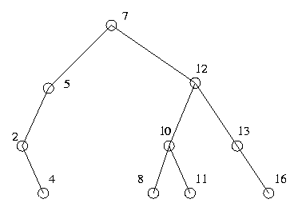
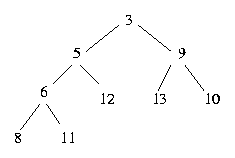

There are several aspect of data structures to consider when selecting the proper way to represent the data for a problem.
If the data struct won't work, it's not helpful at all. Ask yourself what questions the algorithm will need to be able to ask the data structure, and make sure the data structure can handle it. If not, then either more data must be added to the structure, or you need to find a different representation.
If you don't know or can't remember how to code a given data structure, pick a different one. Make sure that you have a good idea how each of the operations will affect the structure of the data.
Another consideration here is memory. Will the data structure fit in the available memory? If not, compact it or pick a new one. Otherwise, it is already clear from the beginning that it won't work.
As this is a timed contest, you have three to five programs to write in five hours. If it'll take you an hour and a half to code just the data structure for the first problem, then you're almost certainly looking at the wrong structure.
It is easy to forget this particular aspect of data structure selection. Remember that a program is useless unless it works. Don't forget that debugging time is a large portion of the contest time, so include its consideration in calculating coding time.
What makes a data structure easy to debug? That is basically determined by the following two properties.
This is, surprisingly, the least important consideration when picking a data structure. A slow program will normally get a noticeable portion of the points, but a fast, incorrect one will not, unless it gets lucky.
In general, remember the KISS principle: "Keep It Simple, Stupid." Sometimes more complexity is very helpful, but make sure you're getting your money's worth. Remember that taking the time to make sure you've got the correct data structure at the start is a lot less expensive than having to replace a data structure later.
In general, you should avoid dynamic memory, because:
Overwriting past allocated memory, not freeing memory, and not allocating memory are only some of the mistakes that are introduced when dynamic memory is used. In addition, the failure modes for these errors are such that it's hard to tell where the error occurred, as it's likely to be at a (potentially much later) memory operation.
The interactive development environments available don't handle dynamic memory well, especially for C.
Consider parallel arrays as an alternative to dynamic memory. One way to do a linked list, where instead of keeping a next point, you keep a second array, which has the index of the next element. Sometimes you may have to dynamically allocate these, but as it should only be done once, it's much easier to get right than allocating and freeing the memory for each insert and delete.
All of this notwithstanding, sometimes dynamic memory is the way to go, especially for large data structures where the size of the structure is not known until you have the input.
Try not to fall into the "coolness" trap. You may have just seen the neatest data structure, but remember:
It's much more important that your data structure and program work than how impressive your data structure is.
There are five basic data structures: arrays, linked lists, stacks, queues, and deque (pronounced deck). You might have seen these structures before. If you have not, consult Sedgewick for what they are.
Binary search trees enable you to search a collection of objects (each with a real or integer value) quickly to determine if a given value exists in the collection.
Basically, a binary search tree is a weighted, rooted binary ordered tree. That collection of adjectives means that each node in the tree might have one 'right' child and one 'left' child (but both or either could be missing). In addition, each node has an object associated with it, and the 'weight' of the node is the value of the object.
The binary search tree also has the property that each node's left
child and descendants of its left child have a value less than that of
the node, and each node's right child and its descendants have a value
greater or equal to it.

The nodes are generally represented as a structure with four fields, a pointer to the node's left child, a pointer to the node's right child, the weight of the object stored at this node, and a pointer to the object itself.
Given a collection of N objects, a binary search tree takes only O(log N) time to find an objects, assuming that the tree is not really poor (a tree where each node has no left child means the search will take O(N) time, for example). In addition, unlike just keeping a sorted array, inserting and deleting objects only takes log N time as well.
Sometimes it's helpful to provide a link to a node's parent as well.
There are several variants that ensure that the trees are never poor. Splay trees, Red-black trees, Treaps, B-trees, and AVL trees are some of the more common examples. They are all much more complicated to code, and random trees are generally good, so it's generally not worth it.
If you're concerned that the tree you created might be bad (it's being created by inserting elements from an input file, for example), then randomly order the elements before insertion.
The idea is this: find a function that maps the elements of the collection to an integer between 1 and x (where x, in this explanation, is larger than the number of elements in your collection). Keep an array indexed from 1 to x, and store each element at the position that the function evaluates the element as. Then, to determine if something is in your collection, just plug it into the function and see whether or not that position is empty. If it is not check the element there to see if it is the same as the something you're holding,
For example, presume the function is defined over 3-character words, and is (first letter + (second letter * 3) + (third letter * 7)) mod 11 (A=1, B=2, etc.), and the words are "CAT", "CAR", and "COB". When using ASCII, this function takes "CAT" and maps it to 3, maps "CAR" to 0, and maps "COB" to 7, so the hash table would look like this:
0: CAR 1 2 3: CAT 4 5 6 7: COB 8 9 10
Now, to see if "BAT" is in the table, plug it into the hash function to get 2. This position in the hash table is empty, so it is not in the collection. "ACT", on the other hand, returns the value 7, so the program must check to see if that entry, "COB", is the same as "ACT".
Consider this function:
#define NHASH 8999 /* make sure this is prime! */
hashnum(p)
char *p;
{
unsigned int sum = 0;
for ( ; *p; p++) {
sum = (sum << 3) + *p;
// some folks add: if (sum < 0) sum = -sum;
}
return sum % NHASH;
}
This function will return *some* integer in the range 0..NHASH-1 for every input. As it turns out, the output is fairly random. It is important (for this simple function) for NHASH to be prime. Combine the above with a main program:
#include <stdio.h>
main() {
FILE *in;
char line[100], *p;
in = fopen ("/usr/share/dict/words", "r");
while (fgets (line, 100, in)) {
for (p = line; *p; p++)
if (*p == '\n') { *p = '\0'; break; }
printf("%6d %s\n", hashnum(line), line);
}
exit (0);
}
to yield numbers like this for the (start of the) english dictionary:
4645 aback 4678 abaft 6495 abandon 2634 abandoned 4810 abandoning 142 abandonment 7080 abandons 4767 abase 2240 abased 7076 abasement 4026 abasements 2255 abases 4770 abash 222 abashed 237 abashes 2215 abashing 361 abasing 4775 abate 2304 abated 3848 abatement ... ...
You can see that the function yields numbers that are all different and are fairly random looking, at least in this small sample.
Of course, if one has NHASH+1 words, the pigeon-hole principle says that at least one pair of them will yield the same function value. This is called a 'collision'. Pragmatic hash tables use a list of length NHASH to represent the head of NHASH linked lists of words that all hashed to the same value.
Let's see how hashing is really used. First, start with a structure that forms a linked list off the hash table. The linked list structure looks like this:
struct hash_f {
struct hash_f *h_next;
char *h_string;
int h_value; /* some value associated with the string */
/* completely optional how it's used or even if it's present */
};
struct hash_f *hashtable[NHASH]; /* the head of each linked list */
/* automatically set to NULL since it's global */
This makes a hash table that would look like this if two elements were present:
hashtable *hash_f *hash_f
+------------+
0 | | +-----------+ +-----------+
+------------+ | *|-+ | 0|
1 | | +-----------+ | +-----------+
+------------+ | 'string1' | | | 'abc def' |
2 | * |->+-----------+ +->+-----------+
+------------+ | val=1234 | | val=43225 |
3 | | +-----------+ +-----------+
+------------+
...
8998 | |
+------------+
Here's hashinsert:
struct hash_f *
hashinsert(p, val)
char *p;
int val;
{
int n = hashnum(p); /* where in table? */
struct hash_f *h = malloc( sizeof (struct hash_f) ); /* make a new hash element */
/* link into start of list: */
h->h_next = hashtable[n];
hashtable[n] = h;
/* optional value: */
h->h_val = val;
/* so we can later find the proper element in this chain: */
h->h_string = malloc( strlen(p) + 1 );
strcpy (h->h_string, p);
return h;
}
And here's hashlookup (which will return a pointer to the hash
structure if it's found):
struct hash_f *
hashlookup(p) {
struct hash_f *h;
int n = hashnum(p); /* where to start looking */
for (h = hashtable[n]; h; h=h->h_next) /* traverse linked list */
if (0 == strcmp (p, h->h_string)) /* string match? done! */
return h;
return 0; /* didn't find target */
}
Now you can insert strings quickly and look them up quickly, in size_of_linked_list/2 string compares, on average.
Hash tables enable, with a little bit of memory cost, programs to perform lookups with almost constant work. Generally, the program must evaluate the function and then possibly compare the looked up element to an entry or a few entries in the table.
A more subtle, and often forgotten, technique to avoid collisions is to pick a good hash function. For example, taking the three letter prefix as the hash value for a dictionary would be very bad. Under this hash function, the prefix "CON" would have a huge number of entries. Pick a function where two elements are unlikely to map to the same value:
It is often quite useful to store more information that just the value. One example is when searching a small subset of a large subset, and using the hash table to store locations visited, you may want the value for searching a location in the hash table with it.
Even a small hash table can improve runtime by drastically reducing your search space. For example, keeping a dictionary hashed by the first letter means that if you wanted to search for a word, you would only be looking at words that have the same first letter.
A trie is, in short, a rooted tree. It has unbounded out-degree (a node may logically have any number of children). The children of a node are stored in a linked list, so each node has two pointers, next sibling and first child.
Tries store a collection of sequences. Every path from the root to a leaf specifies an element of that collection. For example, for the trie illustrated, the collection specified is "CAR", "CAT", and "COB", presuming no other nodes exist.
To determine if a sequence is in the collection, start at the root, search through its children for the first element of that sequence. If no match is found, the sequence is not in the collection. Otherwise, search the children of that node similarly and for subsequent element.
Tries have several nice features. Checking to see if an element is in the list takes time bounded by the length of the sequence times the maximum number of children a node has. Additionally, this data structure can often use less memory than other representations, because prefixes only appear once (in our example, there is only one 'CA' node even though 'CAR' and 'CAT' appear).
In general, a trie is nice to use when you want to ask this question a lot: Does there exist a sequence (word, multi-digit number, or other type) that starts with this?
Some common slight alterations to tries are:
A heap (sometimes called a priority queue) is a complete binary tree
in which every node's value is less than both of its children's values:

If the tree is filled in from left to right level by level (that is, the tree is complete except for its lowest level, on which the elements are filled in from left to right), then the heap can be stored in an array, which is just the top level from left to right, the second level, and so on.
The heap given would be:
3 5 9 6 12 13 10 8 11
In this representation, the children of the node at position x are 2x and 2x+1 (assuming 1 based indexing), and the parent of x is truncate(x/2).
To add an element, put it at the end of the array. Now, as long as
it's below its current parent, swap it with its parent. For example, to
add the number 4, the heap array would go through the following states:
3 5 9 6 12 13 10 8 11 4 3 5 9 6 4 13 10 8 11 12 3 4 9 6 5 13 10 8 11 12
Deleting an element is also relatively easy. Take the last element
in the array and replace the element you wish to delete with it. While
one of its children is less than it, pick the smaller of the two and
swap with it. For example, to delete 3:
11 5 9 6 12 13 10 8 5 11 9 6 12 13 10 8 5 6 9 11 12 13 10 8 5 6 9 8 12 13 10 11
To alter a value upwards, change the value, and swap with its parents as long as necessary.
To alter a value downwards, change the value, and swap with the smaller of its two children as long as necessary.
A heap makes it very easy to ask the question "What's the smallest thing?" in a collection of dynamic values. It's a compact representation and quick to compute. An example of a location where this can be helpful is Dijkstra's algorithm.
In this representation, just the weight was kept. Usually you want more data than that, so you can either keep that data and move it (if it's small) or keep pointers to the data.
Since when you want to fiddle with values, the first thing you have to do is find the location of the value you wish to alter, it's often helpful to keep that data around. (e.g., node x is represented in location 16 of the heap).